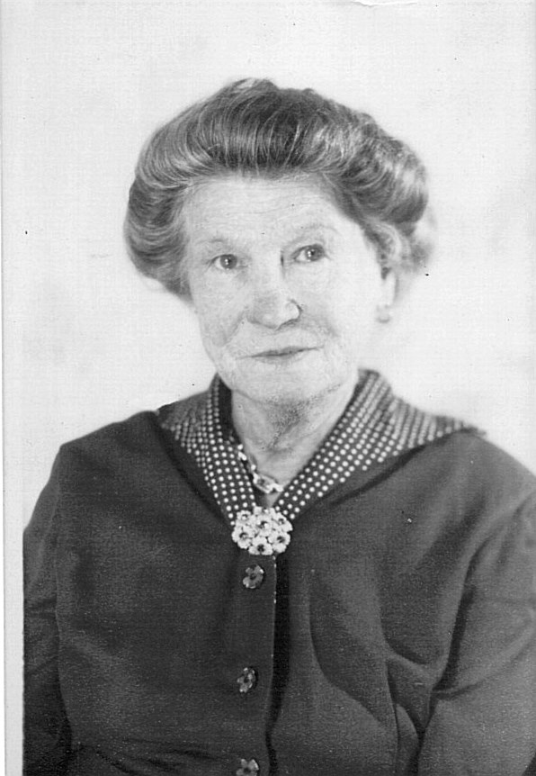
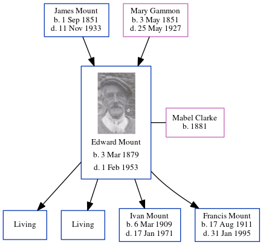

Mabel Minnie Mount (née Clarke) 1881 -
[ Home ] | [ Calendar ] | [ Surnames Index ] | [ Errors ] | [ Family History ]Mabel Clarke, the wife of Edward Thomas Mount (the second cousin three-times-removed on the mother's side of Nigel Horne), was born in Hackney, London, England in 18811 and married Edward (a stoker gas with whom she had 4 children: George, Edward, Ivan James Frederick and Francis John, along with 2 surviving children) at Christ Church, Herne Bay, Kent, England on 28 Oct 19062. On 2 Apr 1911, she was living at 46 King Street in Herne Bay1.
Children
- Ivan James Frederick was born on 6 Mar 1909
- Francis John was born on 17 Aug 1911
Citations
- 1911 Census for England & Wales - Findmypast (was age 30 and the wife of the head of the household)
- Kent, Canterbury Archdeaconry Marriages - Findmypast
Media
Mabel Minnie Clarke

Kent, Canterbury Archdeaconry Marriages Image - GBPRS-CANT-PB350-CCA-U3-204-1-8-00026
Kent, Canterbury Archdeaconry banns - GBPRS/CANT/M/94100430/2
Family Tree
Map
Generated by ged2site. Last updated on Jul 3, 2024